About me
I am a researcher with Shanghai AI Laboratory, working at the Physical Intelligence Center. I received my Ph.D. (2018-2022) from Multimedia Laboratory (MMLab) at CUHK, advised by Prof.Dahua Lin. I obtained my Bachelor's Degree (2014-2018) at Xi'an Jiaotong University. My research interests include 3D content generation and reconstruction, and embodied AI. I am looking for highly motivated interns in 3D generative models and embodied AI at Shanghai AI Laboratory. Drop me an email (lvzhaoyang@pjlab.org.cn) if you are interested.
Education
-

- The Chinese University of Hong Kong (CUHK)
- August 2018 - July 2022
- Ph.D. in Information Engineering
- Xi'an Jiaotong University (XJTU)
- August 2014 - July 2018
- B.S. in Physics (Experimental Class)
Publications
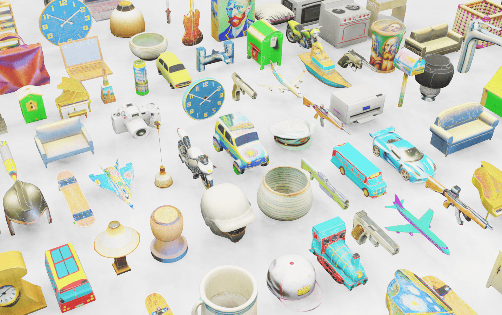
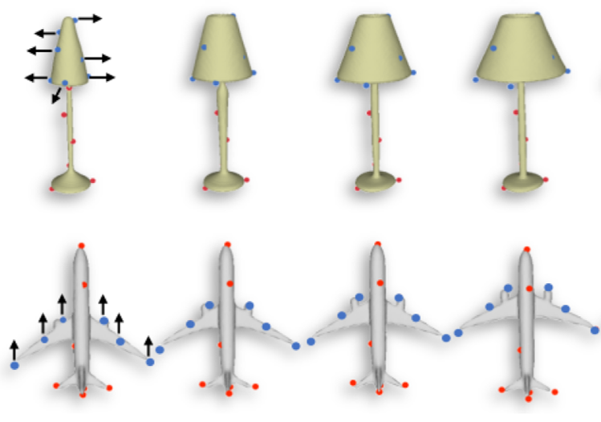
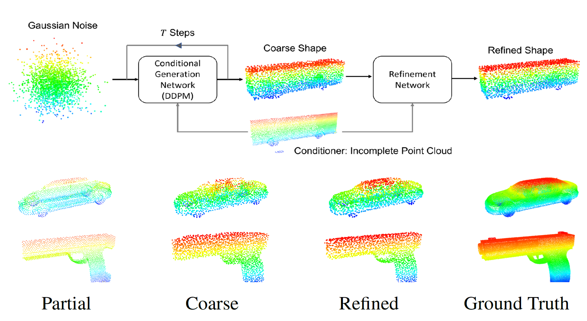
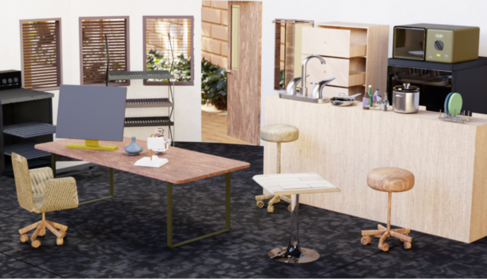
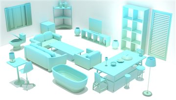
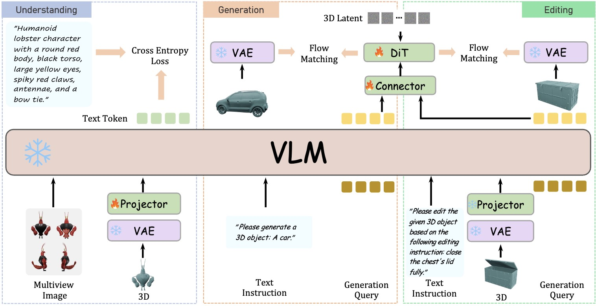
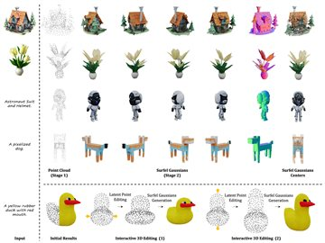
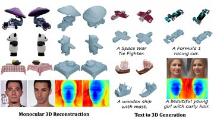
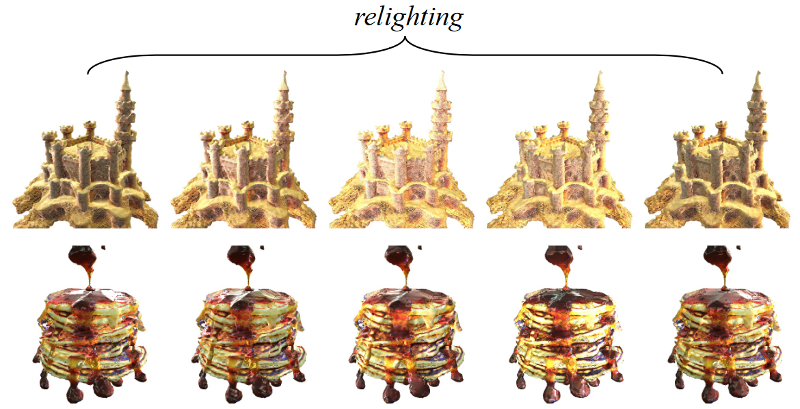
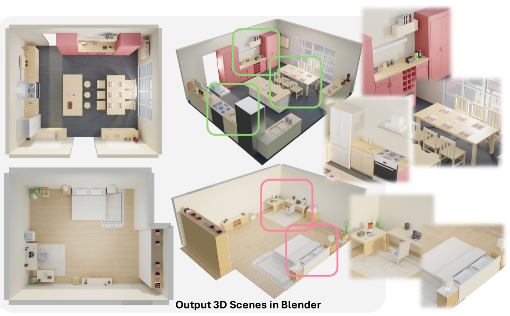
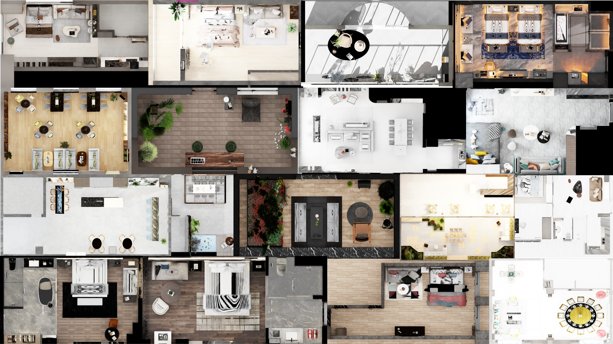
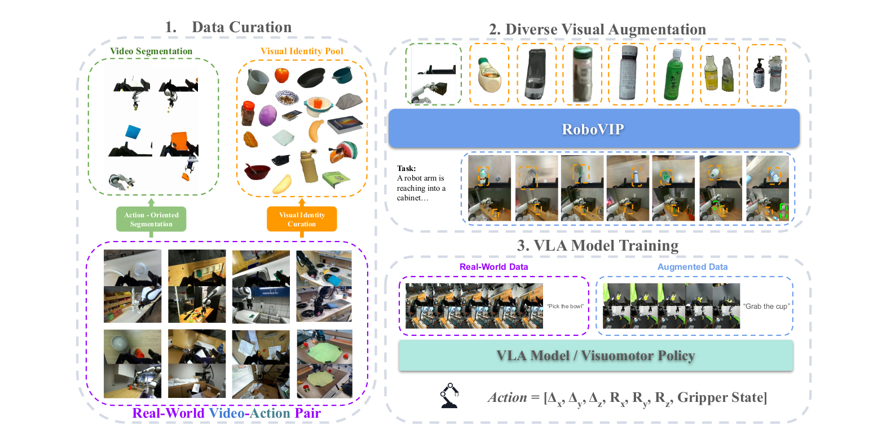
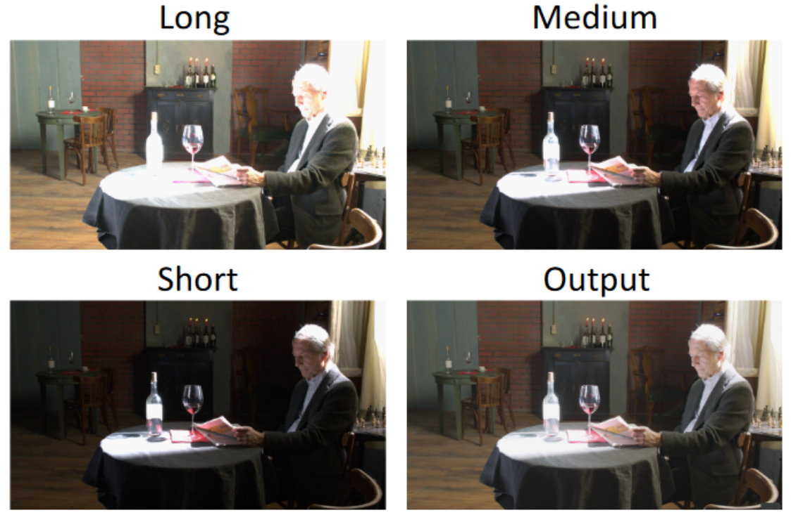
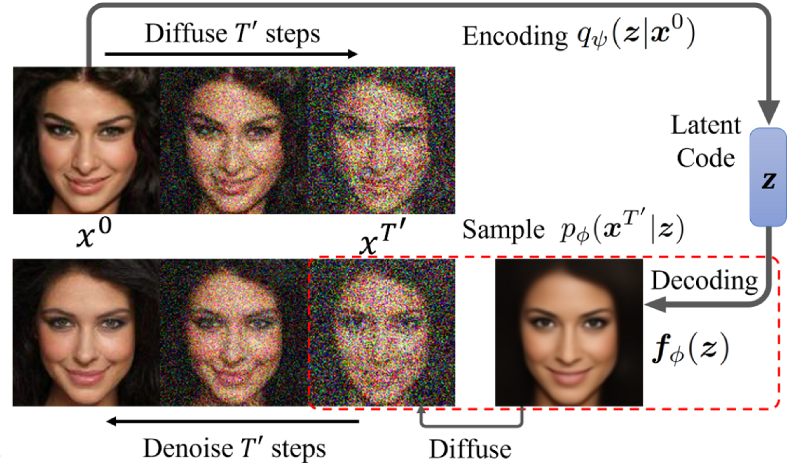

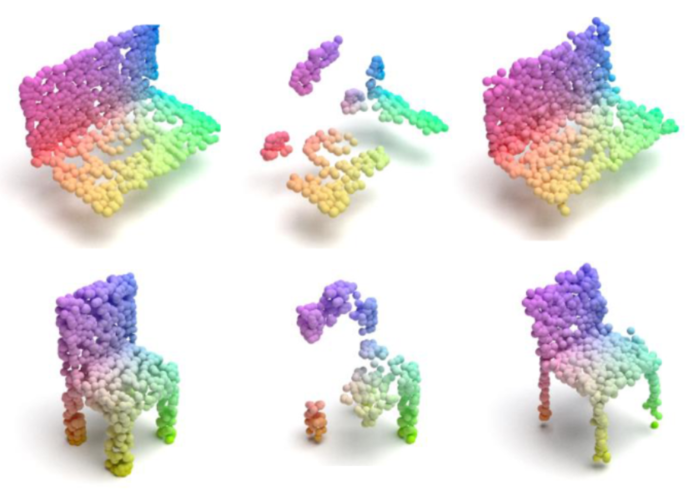

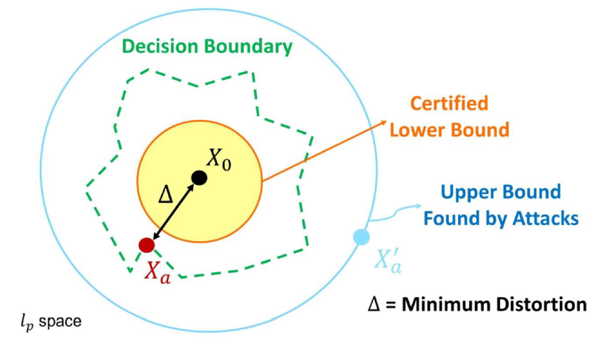
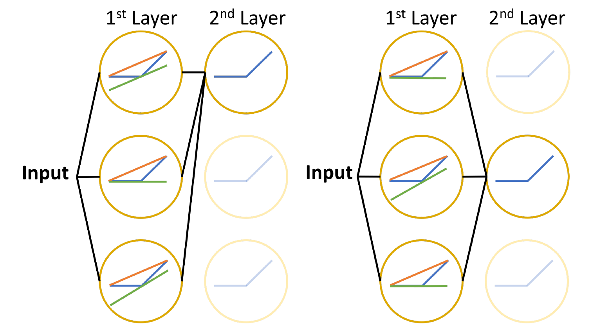